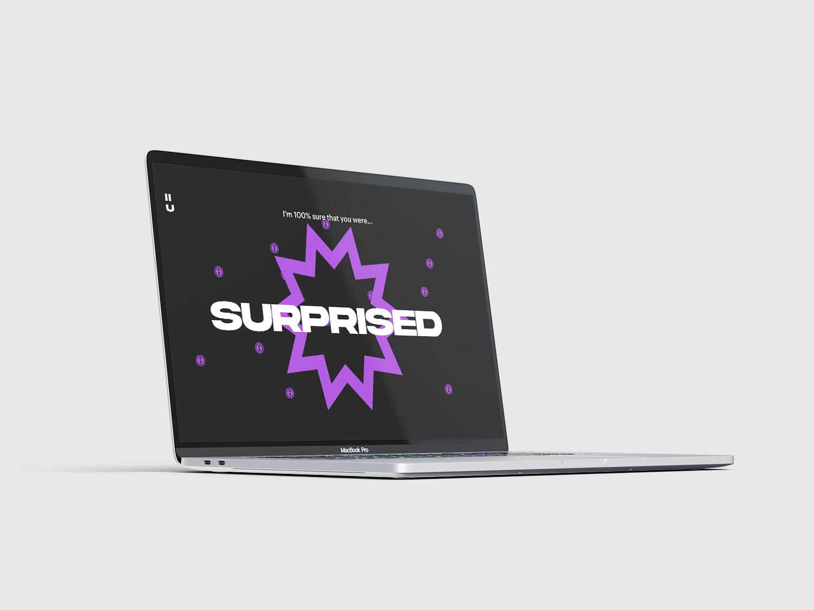

<!DOCTYPE html>
<html lang="en">

<head>
  <meta charset="utf-8" />
  <meta name="viewport" content="width=device-width, initial-scale=1.0" />

  <title>Andrea Corsini - i's on u</title>
  <link rel="icon" type="image/x-icon" href="assets/favicon.png" />

  <link rel="stylesheet" href="style2.css" />

  <script src="libraries/p5.min.js"></script>
</head>

</html>

<body>
  <!------------------------------------SCROLL------------------------------------->
  <div class="progress-container">
    <div class="progress-bar" id="myBar"></div>
  </div>

  <!------------------------------------NAVBAR------------------------------------->
  <div id="navbar">
    <a>andreacorsini.it</a>
    <a>-</a>
    <a href="" style="height: 100%;"></a>
    <a>-</a>
    <a>portfolio 2024</a>
  </div>

  <a id="works" href="index.html" style="color: white; text-decoration: none;">back</a>
  <div id="cerchiomouse1" onclick="location.href='index.html';"></div>

  <!------------------------------------HOMEPAGE------------------------------------->
  <div id="homepage">
    <a id="titoloneprj"><span style="position: absolute; transform: translateX(40vw); color: deeppink;">I'S ON
        U</span><br>
      <span
        style="font-family: Arial, Helvetica, sans-serif; font-size: 6.3vw; position: absolute; transform: translateX(30vw);">EYES
        ON YOU
      </span></a>
  </div>

  <div id="totale">
    <div id="immagini">
      <div style="overflow: scroll">
        
        
        
      </div>
    </div>
    <div id="testi">
      <div id="testo">
        I's on u is a web experience in which the user is asked to reflect on
        how he approaches the various electronic devices present in his daily
        life, especially during the moments in which he watches different
        contents on the internet.<br />
        It traces, through the device's camera, the user's facial movements and
        tries, through a machine learning algorithm, to understand their
        emotions, to present how we interface with a content.<br />
        On the technical side this is a website programmed in HTML and
        JavaScript, in particular the p5.js library is used for movement and the
        ml5’s Face-api for facial recognition.
        <br />
        <br />
        <a href="https://drawwithcode.github.io/2022-group-project-group08/"
          style="text-decoration: underline; color: white">Here you can try the experience</a>
        <br /><br />
        <span style="font-size: 0.9vw">
          in collaboration with:<br />
          Simone Cerea<br />
          Giuseppe Defilippis<br />
          Stefano Gubiolo<br />
          Barbara Mazzina<br />
        </span>
      </div>
    </div>
  </div>

  <script src="https://cdn.jsdelivr.net/npm/gsap@3.12.5/dist/gsap.min.js"></script>
  <script src="https://unpkg.com/split-type"></script>
  <script src="animations.js"></script>
</body>